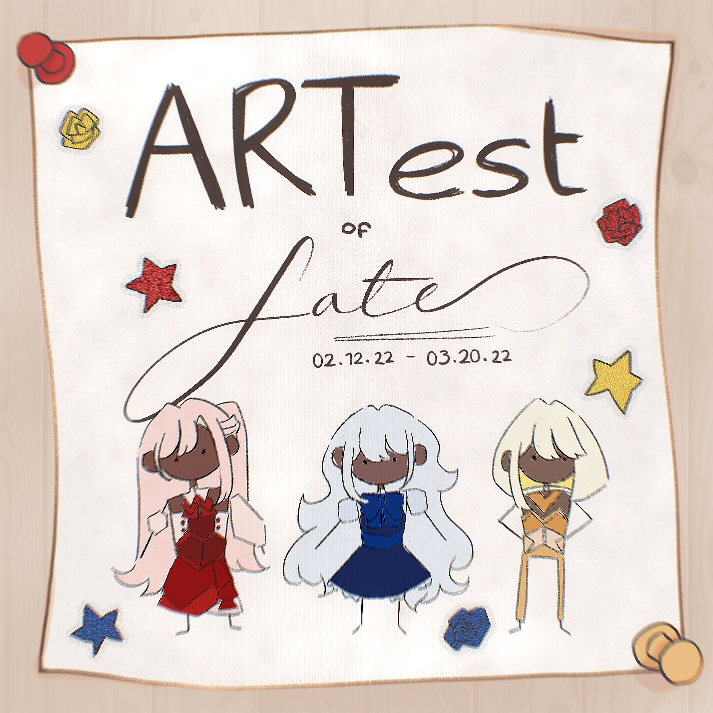
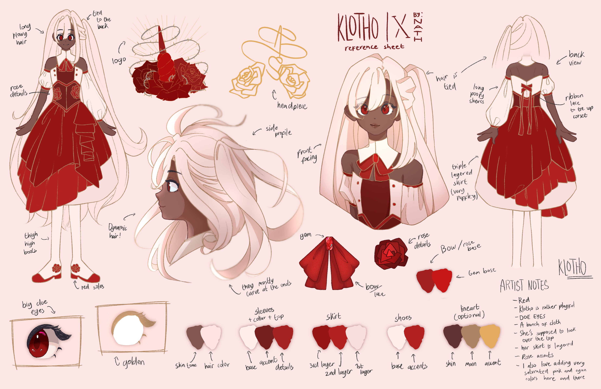
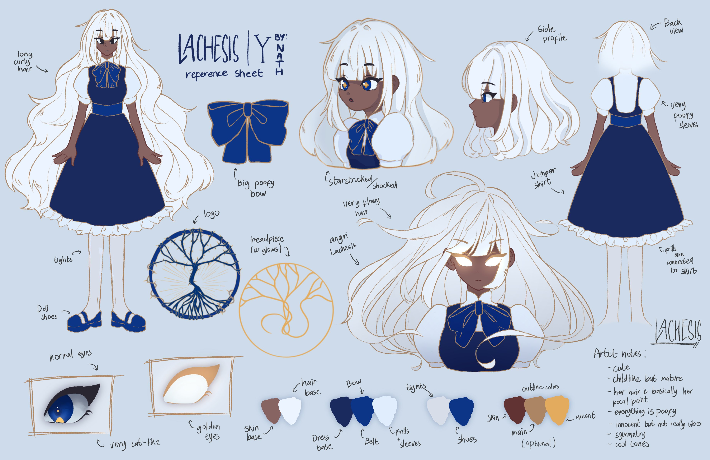
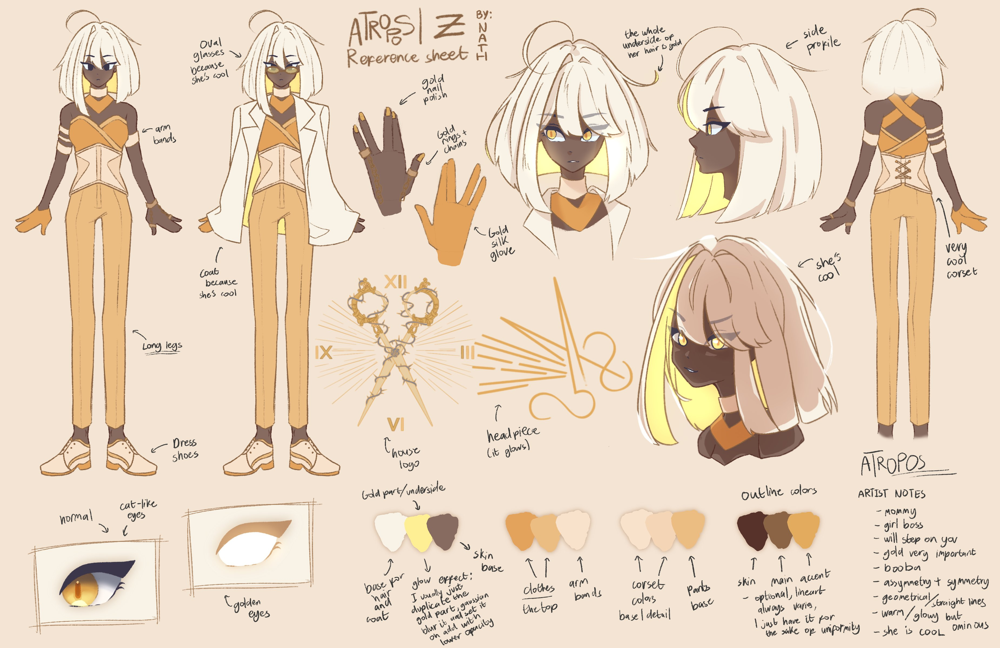
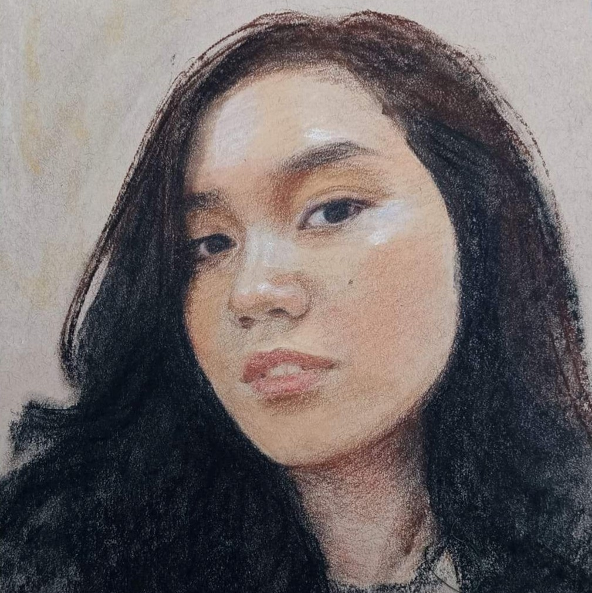

About
|
The ArTest-of-Fate competition is an sub-event within the PSHS-EVC SportsFest 2022, The Fray in the Threads of Fate, that is dedicated to displaying the artistic young talents we have in PSHS-EVC. The entries are displayed in a virtual gallery to be appreciated by the public. PSHS-EVC students will be able to vote by rating the submissions which will contribute with helping us choose the wineers! We will be choosing the winners through the student body's votes and the assesment of our judges with a 20:80 stake respectively. Finally, the winners will be awarded prize money and be recognized in the closing ceremony. |
 |  |
|  |  |

|
Judges
 |
 |  |
| Casul | Hazel Llemos | Ramil Daban Castro |
|
twitter: @CasulCasulCasul |
She is a PSHS EVC graduate SY 2012. A core member of Kolor Banwa (Kolor han Biswal Arte nga Waraynon) Along with other Kolor Banwa members, featured in various newspapers namely Sunstar, EV News, Leyte Samar Daily Express. Additionally, she has taken part in several exhibits all over Leyte. Lastly, she is currently a freelance acrylic painter, muralist and visual artist. |
He is a civil engineer in profession while being a self taught artist. He is currently a member of "Kasugbong" visual artists of Leyte and has participated in several art exhibits in different locations around Tacloban City. |
Credits
|
Charles Joshua Uy |
Website Developer |
|
Christopher Allen Abit |
Website Developer |
| Nathalia Franchette Canlas |
Website Designer |